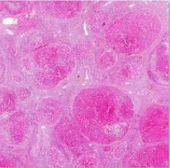
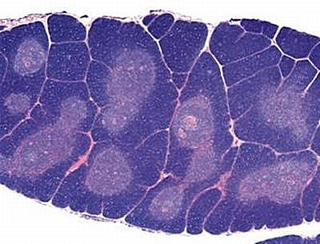
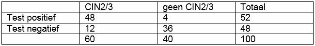

Vraag 1
Deze microscopische foto van een preparaat uit een e-learningmodule van de cursus, toont een leverafwijking. Welke?

Vraag 2
Kies de juiste alternatieven.
Patiënten met een multipel myeloom (maligne proliferatie van plasmacellen) kunnen door hun ziekte een verworven afweerstoornis hebben. Dit is dan een defect in de afweer, wat zich bijvoorbeeld kenmerkt door een .
Vraag 3
Bron: Parham; The Immune system; 4th ed. Fig 7.4.
Op de foto is een thymus te zien van…

Vraag 4
Antibody dependent cytotoxicity (ADCC) is een methode waarmee therapeutische antilichamen kankercellen in een patiënt kunnen verwijderen.
Vraag 5
Amyloïdose ten gevolge van een plasmacytoom (monoclonale proliferatie van plasmacellen) berust vooral op accumulatie van…
Vraag 6
Palpabele schildkliernoduli…
Vraag 7
AIDS gaat gepaard met een verhoogde kans op sommige maligniteiten. Welke twee behoren daartoe? NB: er zijn twee goede antwoorden, die beide gekozen moeten worden.
Meerdere antwoorden mogelijk.
Vraag 8
De klier van Virchow:
Vraag 9
Waardoor wordt myasthenia gravis gekenmerkt?
Vraag 10
Hoe heet de adaptatie waarbij een orgaan in grootte toeneemt door een toename van het aantal cellen?
Vraag 11
Bij een patiënt met een maligne plasmaceltumor (multipele myeloom of de ziekte van Kahler) kan amyloidose optreden. Welke type amyloid is dit?
Vraag 12
Bij meneer Bakker vindt u bij lichamelijk onderzoek een pathologisch vergrote klier van Virchov. Dit kan wijzen op een tumor in het gebied dat draineert op deze lymfeklier.
Waar bevindt de klier van Virchov zich?
Vraag 13
(Vervolg van de vorige vraag) De vrouw is HPV positief. Omdat er veel verschillende HPV typen, en niet alle typen een even groot risico op het ontwikkelen van baarmoederhalskanker hebben, wordt via een tweede test onderzocht of de vrouw positief was voor HPV type 16, één van de typen met het hoogste risico. Zestig procent van de HPV-positieve vrouwen is positief voor HPV type 16. De sensitiviteit van deze type-specifieke test is 80% en de specificiteit is 90%.
Bereken de achteraf kans op CIN2/3 als blijkt dat deze vrouw niet geïnfecteerd was met HPV type 16. Rond af op een heel percentage (dus zonder cijfers achter een komma).

Vraag 14
Metaplasie is...
Vraag 15
De aanwezigheid van enkele biomarkers in sputum kan duiden op longkanker. Om de sensitiviteit en specificiteit van deze biomarkers te onderzoeken, wordt het sputum van 200 patiënten die bewezen longkanker hadden onderzocht net als dat van 200 patiënten bij wie longkanker was uitgesloten. Als één of meer van de biomarkers aanwezig was in het sputum, was de test positief, in het geval dat geen van de biomarkers aanwezig was, was de test negatief. Onderstaande tabel geeft een overzicht van de test resultaten van alle 400 patiënten.
| Longkanker | Geen longkanker | ||
|---|---|---|---|
| Test positief | 76 | 68 | |
| Test negatief | 124 | 132 | |
| 200 | 200 | 400 |
Bereken de sensitiviteit van de sputum test afgerond op een percentage zonder decimalen (dus zonder cijfers achter een komma).
Vraag 16
De sensitiviteit en specificiteit van de biomarkers in het sputum vielen toch wat tegen. Dus zochten de onderzoekers verder, met succes. Hun tweede test had een sensitiviteit van 70% en een specificiteit van 75%. De test wordt in de klinische praktijk ingevoerd. Een 70-jarige man, die zijn leven lang heeft gerookt, blijkt positief op deze nieuwe test.
| Longkanker | Geen longkanker | Totaal | |
|---|---|---|---|
| Test positief | 42 | 485 | 527 |
| Test negatief | 18 | 1.455 | 1.473 |
| 60 | 1.940 | 2.000 |
Bereken de achteraf kans op longkanker voor deze man. Ga uit van een prevalentie van longkanker van 3% en rond af op een heel percentage (dus zonder cijfers achter een komma).
Vraag 17
Sleep de juiste processen naar de juiste organen in het lichaam.
Sleep een optie naar de bijbehorende rij, of tik eerst op een kaart en dan op een rij.
beenmerg
Sleep hier naartoe
lymfeklier
Sleep hier naartoe
huid
Sleep hier naartoe
milt
Sleep hier naartoe
Vraag 18
Kies de juiste alternatieven.
U bent co-assistent bij de huisarts. De huisarts vertelt u dat u altijd alert moet zijn als bij het lichamelijk onderzoek de klier van Virchow pathologisch vergroot is. Er moet dan ook gedacht worden aan metastasering van een maligniteit via de ductus thoracicus. Waar bevindt de klier van Virchow zich? Kies de juiste alternatieven: de klier van Virchow bevindt zich .